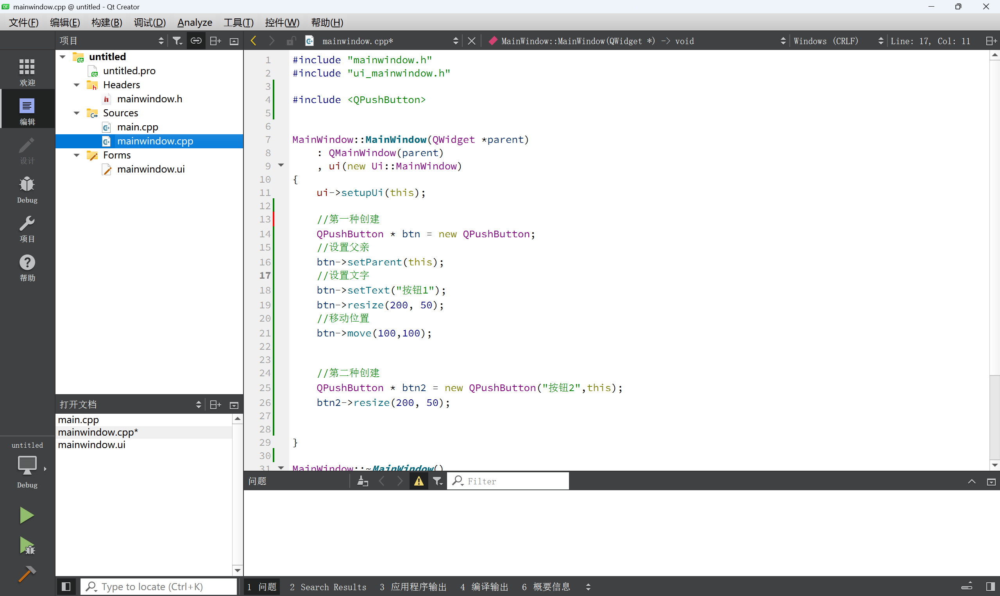

02-2-2-QT入门2
文章主要参考CSDN会飞的鱼-blog的文章《QT入门看这一篇就够了——超详细讲解（40000多字详细讲解，涵盖qt大量知识）》^[https://blog.csdn.net/m0_65635427/article/details/130780280]
一、Qt按钮小程序
重新创建一个QMainWindow
打开mainwindow.cpp
其中主要是界面的设置

添加代码
1 | |
1-创建按钮
代码中展示了两种创建按钮的方法
第一种
1 | |
第二种
可以认为第二种创建就是在第一种创建的基础上，在刚刚创建出按钮实例的时候就指定了其中的部分属性
1 | |
一个按钮其实就是一个QPushButton类的对象，如果只是创建出对象，是无法显示到窗口中的，所以我们需要依赖一个父窗口，也就是指定一个父亲，利用setParent函数或者按钮创建的时候通过构造函数传参，此时我们称两个窗口建立了父子关系。在有父窗口的情况下，窗口调用show会显示在父窗口中，如果没有父窗口，那么窗口调用show显示的会是一个顶层的窗口（顶层窗口是能够在任务栏中找到的，不依赖于任何一个窗口而独立存在）（按钮也是继承于QWidget，也属于窗口）。
如果想设置按钮上显示的文字可以用setText，移动按钮位置用move。
对于窗口而言，我们可以修改左上角窗口的标题setWindowTitle，重新指定窗口大小：resize，或者设置固定的窗口大小setFixedSize。
2-Qt窗口坐标体系
以左上角为原点（0,0），以向右的方向为x轴的正方向，以向下方向为y轴的正方向
二、信号槽机制
简单介绍Signal、Slot和Connect
- signal-当某个事件发生后，如某个按钮被点击了一下，它就会发出一个被点击的信号（signal）。
- Slot-某个对象接收到这个信号之后，就会做一些相关的处理动作（称为槽slot）。
- Connect-但是Qt对象不会无故收到某个信号，要想让一个对象收到另一个对象发出的信号，这时候需要建立连接（connect）
添加信号槽的一个简单示例
添加信号槽时
在mainwindow.h文件中添加
1 | |
main.cpp文件不变
mainwindows.cpp文件添加信号槽的连接
1 | |
和定义的函数
1 | |
运行后点击按钮跳出提示
信号与槽的Connect
示范代码
1 | |
第一句是创建按钮，第二句是关键
connect函数是建立信号发送者(sender)、信号(signal)、信号接收者(receiver)、槽(slot)四者关系的函数
1 | |
- sender：信号发送者
- signal：信号
- receiver：信号接收者
- slot：接收对象在接收到信号之后所需要调用的函数（槽函数）
信号和槽可以使用自带的，也可以使用自定义的
在对应的头文件(此处为mainwindow.h文件)中，对自定义信号和槽进行声明
在逻辑文件(此处为mainwindow.cpp)中，添加自定义信号和槽的逻辑